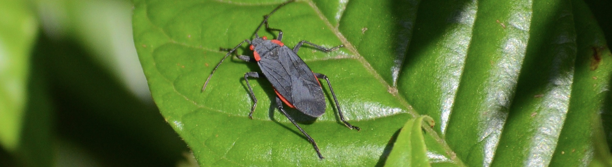
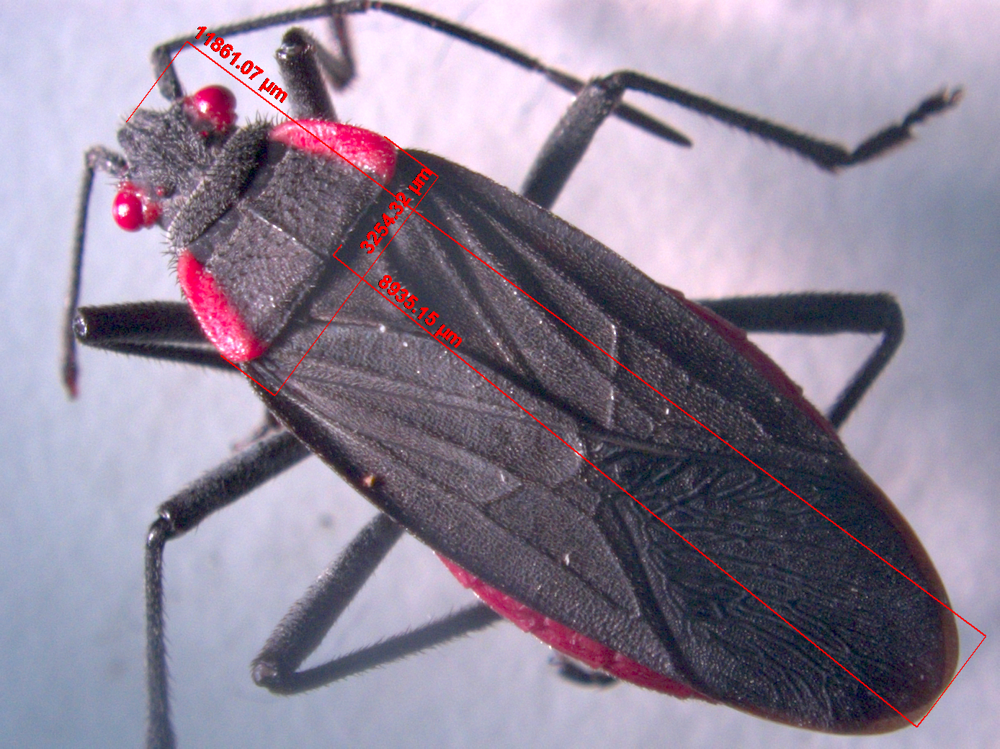
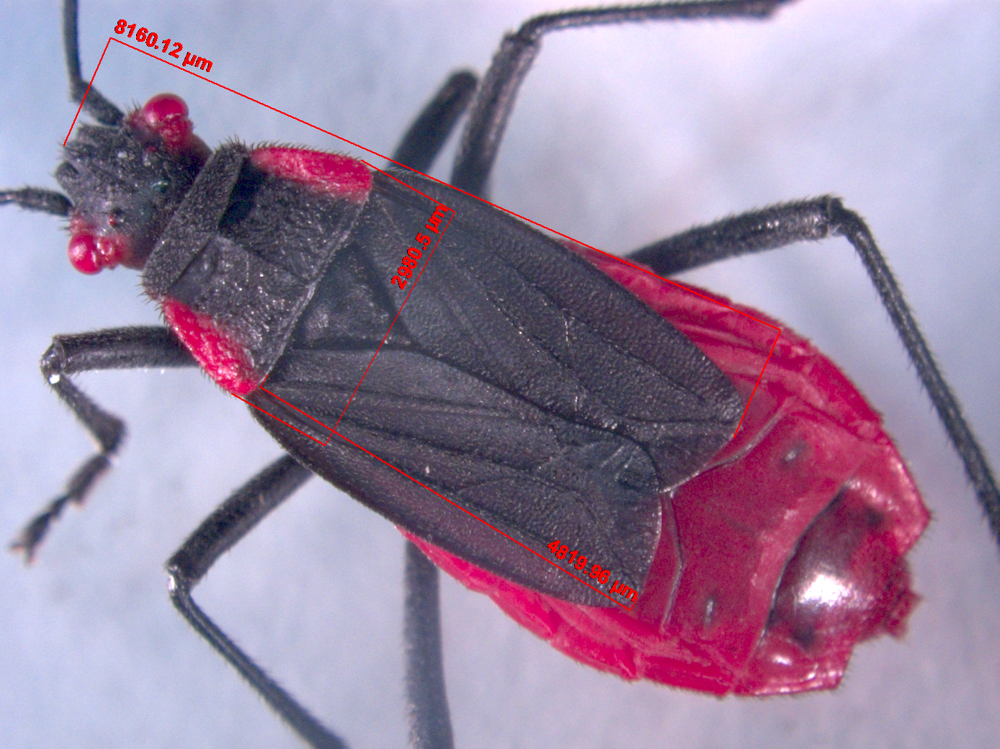
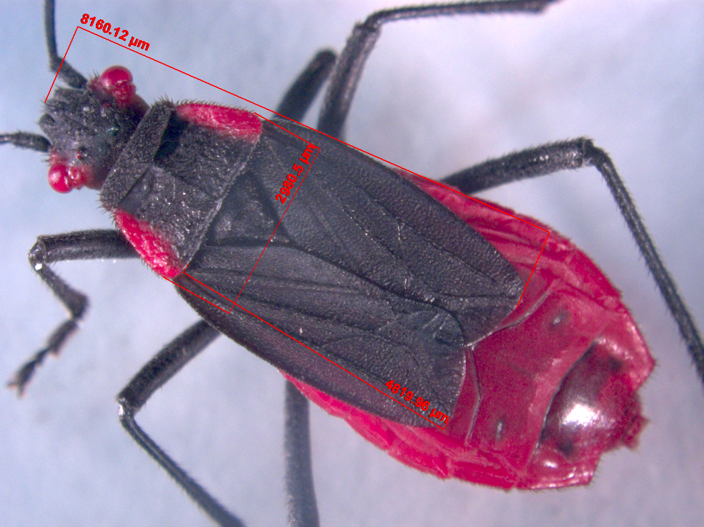

Morphology
How is morphology impacted by the developmental environment and evolutionary history?
Morphology is central to our understanding of how soapberry bugs use and move between host plants. The two primary aspects of soapberry bug morphology that we study are beak length and wing length.
Soapberry bugs feed on the seeds of their host plants using an elongated beak. Bugs with longer beaks are more successful at feeding through the inflated seedpods of the native host, balloon vine. In contrast, bugs with shorter beaks are more successful at feeding on the exposed seeds of the introduced host, golden rain tree. This divergent selection pressure led to different beak lengths on these two host plants after soapberry bugs colonized and adapted to golden rain tree in the mid-1900s. However, in the last 30 years gene flow has swamped the long beaks of populations on the native host, leading to a landscape dominated by short-beaked bugs. We study how soapberry bug beak length changes over time using field collections, and how the developmental environment (host plant, temperature, conspecific feeding, etc.) influences the eventual beak size of individual bugs.
Soapberry bugs have multiple wing morphs, with some individuals having short, non-functional wings. We use wing morphology to understand insect flight, as well as studying how it changes over evolutionary time in the field and developmental time in the lab.
We use microscopic photography to measure the evolving physical form of soapberry bugs. We take body length, wing length, thorax length, beak length, and wing-area measurements. In addition, we conduct dissections under the microscope for wing-muscle digestion.

Single wing. We use ImageJ to process individual wings and extract wing area or wing curvature measurements.



Dorsal images of a long-winged (top) and short-winged (bottom) soapberry bug.
Explore more research topics ↓